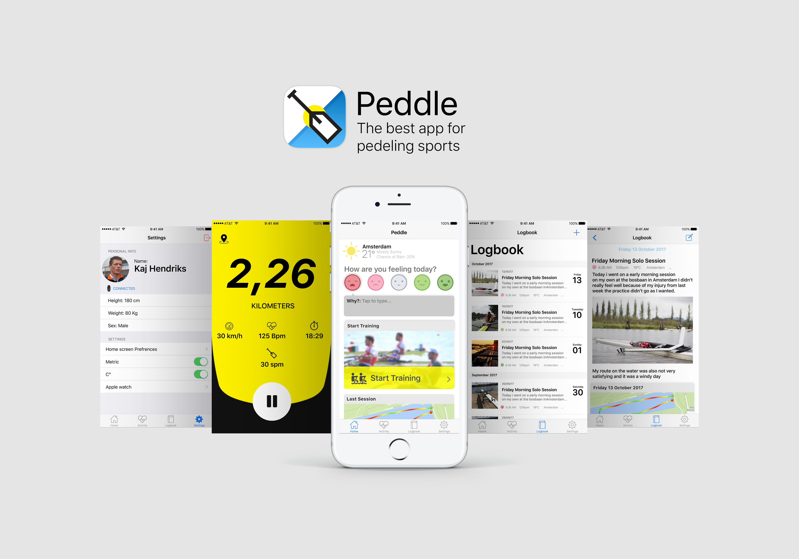
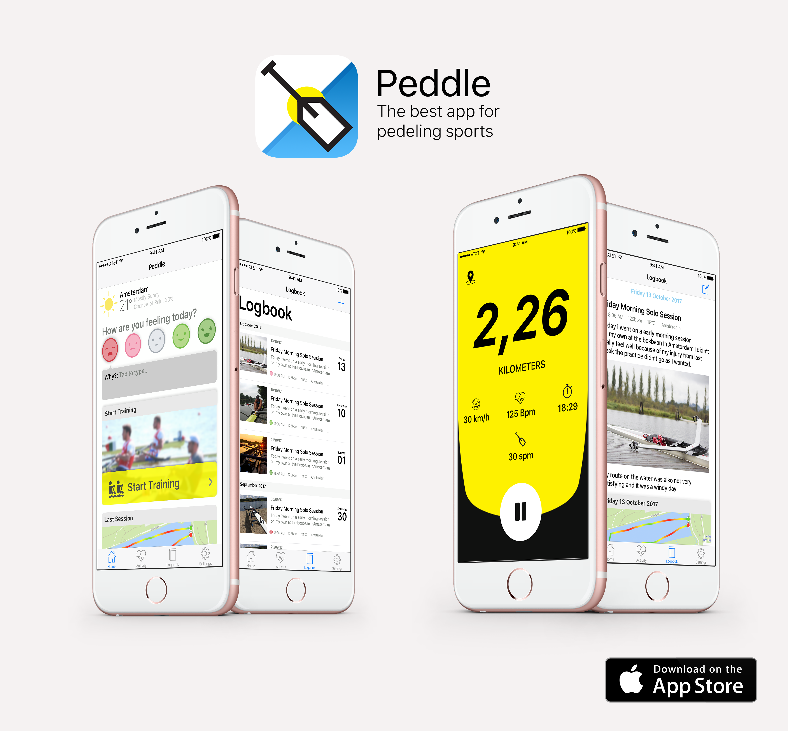
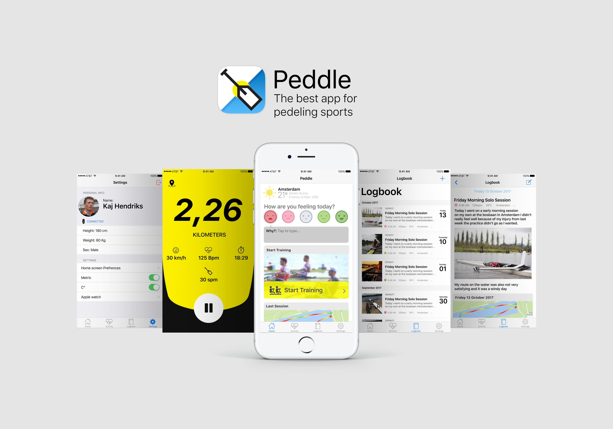
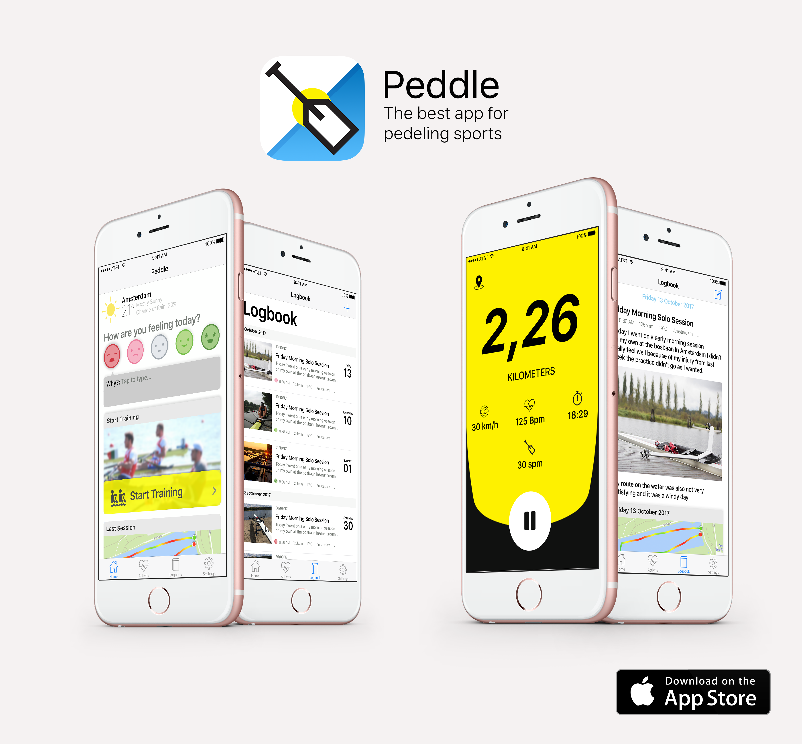

- Client Name
- Paddle
Bij dit project kreeg ik een sporter aangewezen en toen moest ik een app ontwerpen die hem hielp bij zijn sport. Ik heb eerst een interview gehad met de sporter om zo te zien wat zijn knel punten zijn en wat hij graag zou willen hebben. Ik als designer heb toen een vorm gemaakt die aan zijn wensen voldoet en meer. Ik wou graag een interface ontwerpen die hem in een blik een overzicht geeft van zijn data en ik wou zorgen dat hij alles in een plek had. De sporter was tevreden met het ontwerp en het leek hem erg handig alleen was dit nog maar een prototype . Hij vond het jammer dat hij het niet echt kon gebruiken maar het beviel hem en leek hem een goed idee. In dit project heb ik goed geleerd om uit te klant te halen wat ze precies willen en heb ik goed geleerd itteraties te maken door vaak feedback rondes te houden. Ik heb gemerkt dat dat erg belangrijk is in interface design.
 


